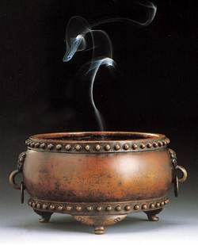
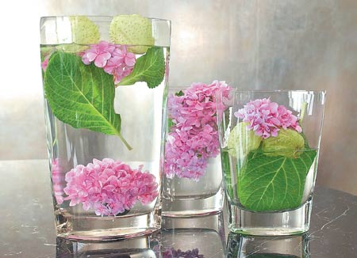
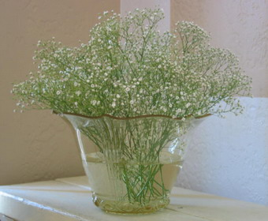
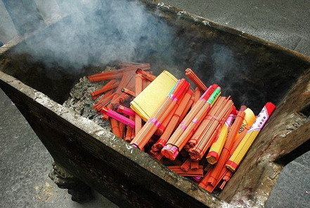
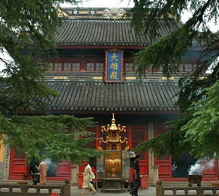
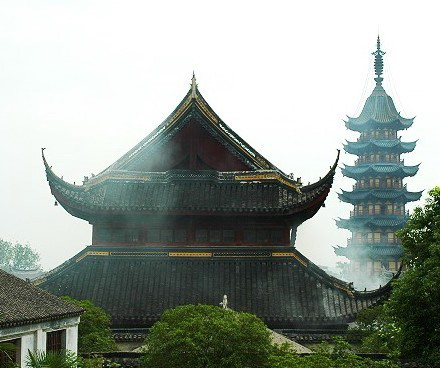

拜佛供奉什么香最好？
冯冯
迷失在未来 / 誊录
常有人问我：拜佛供奉什么香最好？
 这可把我问得愣住了！舍下小小佛堂从不上香。尽管常有热心人士送来各种名贵的香，什么都有，檀香、沉香、线香、卧香、枝香、条香、片香、炉香……种种名牌，琳琅满目；又有现佛香，点燃之后，香灰柱立，渐渐现出佛像或菩萨；也有假香，是电灯小泡亮了现出一点火光的……，我都没有予以点燃供佛。每年我都把一大批名香转送给熟稔的佛寺、佛会，连同数以千百本计的佛书，送去佛寺结缘。我只留下少数常用的佛经，香可是一支不留，佛桌上的卧香炉永远是虚设的。
为什么我不上香？是因为无恭敬之心吗？不是的！
首先，我个人的了解是，原始佛教并不燃香供佛，只有供奉莲花与各种洁净清雅的花卉，与一些新鲜水果。从原始的佛经文字来看，都是供奉鲜花水果，没说焚香燃烛供佛。我推断原始佛教是不焚香的，焚香是外教，特别是婆罗门教的作为。那些跪倒以至五体投地的膜拜，都是外道的仪轨，不是原始佛教的要求。释迦 基于此种了解，所以我不焚香供佛，只供奉水果与鲜花，现在连鲜花也改为塑胶假花了，因为鲜花往往有虫，又不耐久，有些又香气太烈，叫我这个有过敏症的人头痛头晕。特别是玫瑰花与一种英文名为Baby's Breath的白色小花，奇怪的香气使我头晕、呼吸困难，几乎晕倒。若供鲜花，我只用菊花、紫阳花或牡丹花。（春夏季节，园子有草本牡丹盛开，与中国大陆的木本牡丹有别；紫阳花属于杜鹃花家族，但较为巨大而重瓣艳丽），或者也用洋水仙，或用木莲花、郁金香，这些香气清淡的花卉。莲花在此地是极少见的珍品，没有那种清香的中国荷塘莲花，只有睡莲，睡莲不及中国荷花的纯净高雅清香，而且到了晚上它要合起来睡觉，也很惹虫子。我不用它来供佛，我推断当佛在世时，弟子们是用中国荷花供佛的，中国荷花源出印度，是佛教传入中国的，经过改良品种，变得比原产地的荷花更美。加拿大太冷，我三十多年来试图培植荷花都不能成功，只好买人造的荷花供佛。
牟尼主张众生平等，他推翻婆罗门教的不合理专制阶级制度，他提倡自由自在无拘无束，人人佛性平等，人人均可成佛，他就是厌倦透了身为太子在宫廷的许多繁文缛礼与拘束，他又怎会到外面来接受任何奴隶式的五体投地膜拜？又怎会接受焚香的供奉？我推断佛陀是不许焚香燃烛供神的。本来焚香就不是供人的，原是外道用以供神祗的。佛陀从未自称是佛，更从未装神扮鬼，他一直以谦虚自称是行者（修行人），我推断佛陀在世之时，弟子都会恪守师教，不敢焚香燃烛供奉他。我推断必是在佛入灭之后，才有弟子敢于倡导焚香燃烛来拜佛。到了后世，更演变成为供奉素品、点心、佳肴一大桌，还有人抬了烤猪、烤羊去供佛的，又有焚指供佛的、刺血供佛的、叩头流血供佛的……都已离开原始佛教很远了，演变成了迷信的神教色彩。
问道供香问题，一般都以檀香为最上品，或用檀香木片，或用木屑、木粉，焚烧冒烟，香味强烈，可是不俗。可是檀香难得，原产地是檀香山（夏威夷因盛产檀香木而得名），现在也很少出产了。檀香树生长需时多年，必须是三、四十年以上的老树才可供伐，檀农已渐渐改为种植其他较为快速收成的农作物，很少人等待四十年去收取檀木了。檀香的主要顾客，可能是佛教徒，我观察到印度教徒已很少焚、供檀香，可能是价钱太贵及太稀少。他们已改用现代人造檀香粉末，是化学药剂的芳香药品合成的，几可乱真，可是更能使人晕眩。印度教及其他外道，喜欢焚香打坐入定，闻了这些异香，据说有助于入定，获得禅悦，飘飘欲仙，不愿醒来。我推断异香内可能含有麻醉药品成分，例如印度大麻之类，会使人的大脑功能因受麻醉而产生幻觉，久之会引起大脑神经细胞的死亡。他们所谓焚香“入定”是相当危险的中毒现象，并非真的禅定。
没有分析过藏香的成分，可是焚点起来，它的香气浓烈，近似上述的大麻合成香。我怀疑也可能掺有印度大麻，我嗅到会立即晕眩天旋地转，摇摇却倒。若不及时冲出户外，难免昏迷倒地，须打电话叫救护车送去医院急救室。只去过一次本地某一处藏密道场，经验可怖，永远不敢再去，那边再有大法，也不敢再去了。他们人倒极友善周到，只是受不了那些浓烈的藏密卧香。西藏人十分好客，可是他们藏香太可怖！西藏人却若无其事，可能是他们世代从小习惯了，身体产生抵抗力，也可能他们的修为有成，已经不怕浓香了，控制了嗅觉，于香味触觉都不起心？我却不济，一分钟之内就须紧急撤退！我想，那种香若用杀虫药，必可卖大钱、发大财。不知它是什么秘方配制的。
 中国人喜用的枝香，有些是掺入少许檀香木的粉末，但大多数都是用化学芳香药剂，加上木糠粉、泥土、胶水、一些脂肪（传统上是使用猪油，因为成本低廉，现在有些改用素油或蜡油，晒干成为枝香。以上是从一本刊物介绍制香手工业的文章获得的资料），焚烧的香气比藏香或卧香或印度香都清淡得多，比较能接受，但还是会不舒服，会头痛或头晕，实在跟烟草没有什么分别，与雪茄烟差不多，都是很不卫生的，都会侵害肺脏，它的二氧化碳也有害大脑，太浓厚的束香焚烧，使人心跳呼吸困难，头痛晕眩。庙宇内往往插焚太多的枝香。一个香炉或香鼎，插满了焚香，数以千百支计算，全寺香烟缭绕，烟雾弥漫，使人窒息。上香者源源络绎而来，人人供奉大把大束的焚香，以为供香愈多愈显恭敬诚心，愈得神佛庇佑。殊不知那些香烛的乌烟瘴气，把神佛都熏得跑掉啦！神佛倘若是看谁焚香最多才去保佑他，那岂非笑话！佛菩萨会那样贪着吗？人若无善念？若无清净心，再多焚香燃烛，供奉一万支香，一万斤香油，也是白供！正信的正直神佛会稀罕人间的香火吗？若为供奉香火之多寡而加佑于人厚薄不同，恐怕也不是正经的神佛罢？事实上，供奉香火，只不过是信徒自求心安，香火多寡，于神佛何尤？香烧太多了，真可能把佛菩萨熏得受不了，呛咳着飞跑而逃哪！
 假如香烛的浓烟不熏跑了神佛，至少也会熏坏了人！不信么？不妨统计一下，那些庙祝、香火道人、出家人，其中有几个幸而不害上呼吸系统疾病？肝病、肾病、心脏病，为什么吃绝对全素的出家人修行那么好，也还会患这些病？吃素固然有正面，也不免有负面影响。并非凡是吃全素的就百病不侵、长生不老，只是比多吃荤的人较能保健一点而已。庙堂里每天日夜成千成百的焚香与燃烛产生的二氧化碳与那无色无臭的一氧化碳，还有那些毒气，，却不是吃素就能抵挡的。种种毒气进入了呼吸系统、肺脏经血液运到各处内脏、全身细胞、大小脑子、中枢神经系统，或许部份被解毒，但是残余的毒素会累积日增，就像累积的烟草尼古丁碱那般，终于击溃人体的天然免疫力，引起死亡，难怪就有那么多的出家人也会换上肺癌、肝癌、心脏衰竭、肾脏衰竭、血癌……，谜底答案就是……长期受到香火的烟雾中毒！可说就是给香火浓烟毒死的！出家人不吸烟草的香烟，却也会死于肺癌、肝癌，是中了香火的毒而不自知，也从来没人提出过任何警告，很可能我还是头一个人发出这样的警告吧？应该不算是危言耸听吧？
 近十年来，见到先后多为法师死于肺癌与肝癌，素来不吸烟、不喝酒、戒行严肃、生活严谨的法师，也会罹此绝症。有些人就说是由于前生的恶业，我推断不是。我认为是长期日夜被香火的毒气所侵害的结果。假如有人怀疑这是太大胆的假设，何妨带科学与医学仪器到各处庙堂去搜集香火浓烟标本，予以化验，作定性、定量分析，那就不难测出是否有妨害人体健康之可能。
假如我的推断没错，我们就明了了香火其实有害无益！不知害死了多少无辜的善良修行人与出家人！我主张应该废除焚香燃烛，以兹保健，同时也防止回禄之灾！（每年均有听闻佛堂被火灾焚毁，泰半由于焚香燃烛不慎引起！）
其实，真正最佳的香，是“心香”！而不是任何外物制成的香。
图片出处
原载《佛乘世界》第12期 ：1998年6月13日